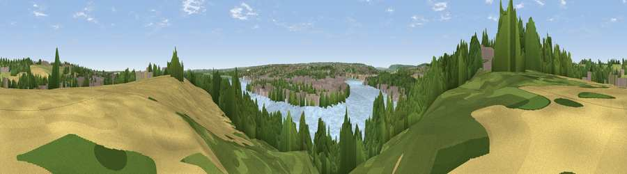

Viewpoint near Lower Upnor
#31184 in England · top 47% of its area beats it · near Lower UpnorWhere it is
The exact computed spot (TQ 76625 71575). Click the marker for map links.
The view, rendered

A 360° render of this exact spot computed from the terrain model, tree cover and land cover — summer colours, afternoon light, calibrated against photographs of famous viewpoints. Real trees, hedges and buildings will differ in detail.
The panorama
Grey silhouette: terrain skyline in each direction (720 bearings, Earth curvature and refraction included). Dashed green: skyline with trees (+15 m) and buildings (+8 m) as obstacles. Blue strip: how far the ground is visible on each bearing.
Where the view opens
Wedge length = distance to the farthest visible ground on that bearing (vegetation-aware). Rings at 10, 25 and 50 km.
What fills the view
33% water · 29% woodland · 17% built-up · 12% cropland · 8% grassland
Angular shares of the visible panorama (visual magnitude), not map area. Landscape diversity 0.65 (0–1 Shannon).
Key numbers
More beautiful places nearby
The staircase of upgrades: each row has a higher view potential than everything closer. Driving times are estimates from straight-line distance, calibrated against real road routing — check an actual route before setting out.
| Place | Direction | Drive | Score |
|---|---|---|---|
| Viewpoint near Lower Upnor | W · 1 km | ~3 min | 43.8 |
| Viewpoint near Lodge Hill | NNW · 3 km | ~6 min | 47.5 |
| Viewpoint near Cliffe Woods | NW · 3 km | ~7 min | 54.0 |
| Broom Hill | WSW · 4 km | ~9 min | 54.9 |
| Viewpoint near Shorne | W · 8 km | ~16 min | 55.1 |
| Viewpoint near Burham | SSW · 10 km | ~19 min | 63.1 |
| Bluebell Hill | SSW · 10 km | ~19 min | 64.8 |
| Viewpoint near Boxley | S · 11 km | ~22 min | 68.6 |
51.41568, 0.53860 · source: screening · position refined by local search. Computed location — check access rights before visiting.